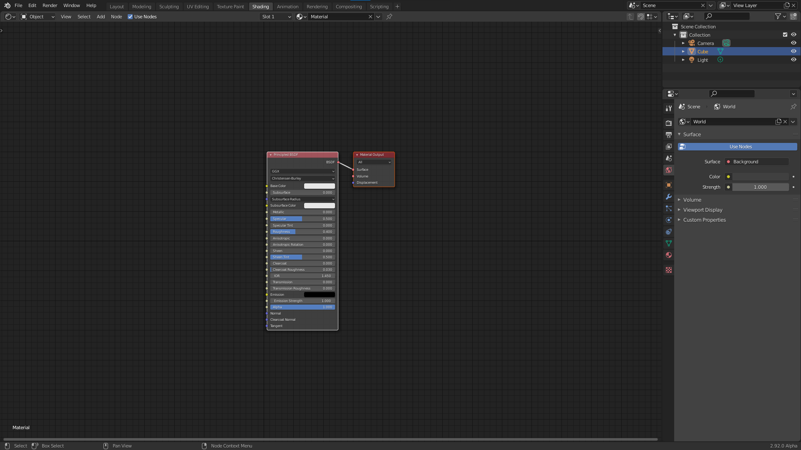
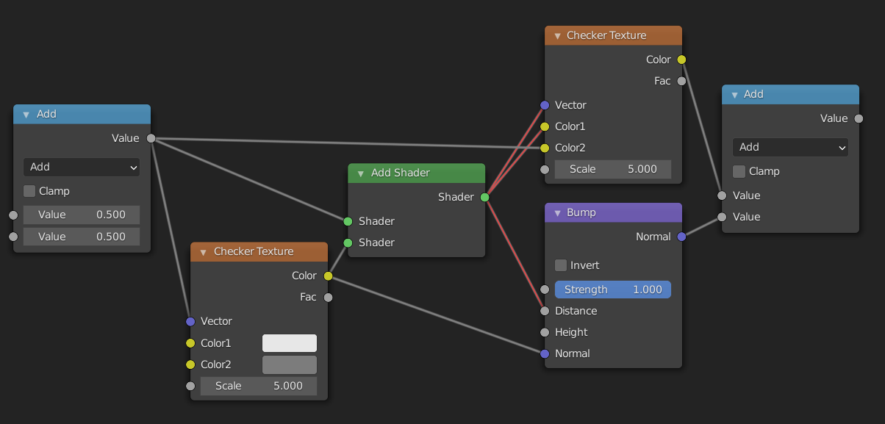
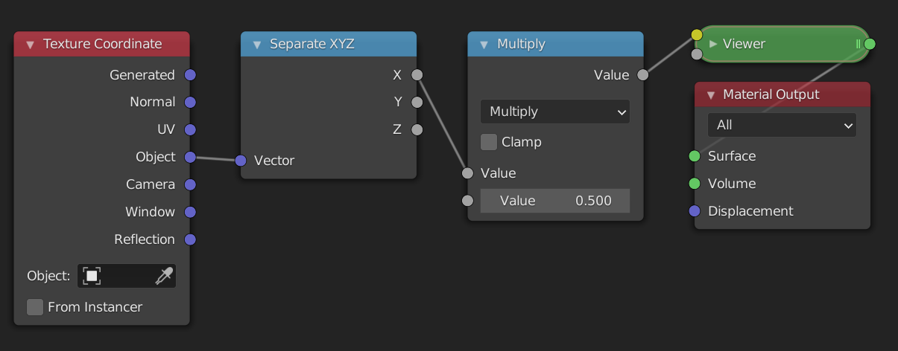
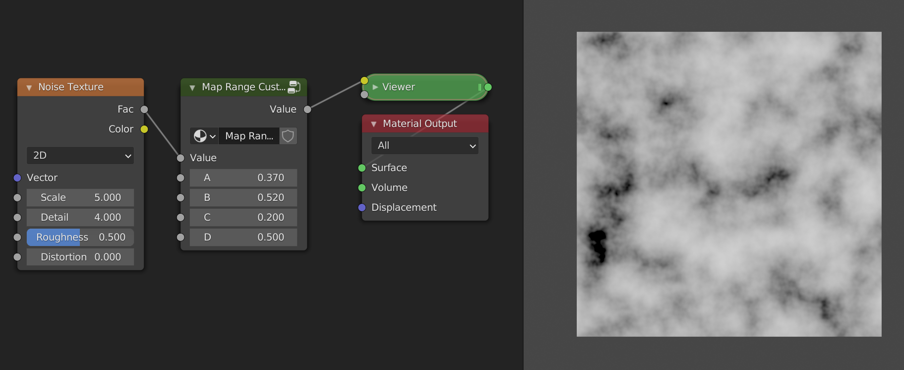

About this Book
The goal of this book is to be a resource for people learning about procedural shaders in blender. It is still a work in progress. I don't know everything, and will therefore not be able to cover everything. The shaders from this book are also not optimized, and serve only as a learning resource. I'm not the first person to write about shaders, so I highly recommend that you take a look at some other great sources as well. A list of these resources can be found here.
The book focuses on creating procedural shaders in blender, i.e. it is not a tutorial for blender itself. The early chapters are aimed at complete beginners, and serve as a replacement for my series on youtube: Math in the node editor. Here we will look at how we can manipulate coordinates to create all sorts of cool effects. Later chapters will be more advanced and cover more interesting topics such as vector displacement. There will also be a small chapter on python scripting. Each chapter will have examples where we create shaders using the things we learned.
Acknowledgement
This book was written using mdbook. It would not have been possible without the loving community of Rustaceans.
What is a shader
Although there are varying definitions for what a shader is, a simple way to think about them is as programs that are run on a Graphics Processing Unit (GPU). A GPU, unlike a Central Processing Unit (CPU), is built to do a single operation many times in parallel very quickly. These operations can range from things like adding two numbers to calculating the sine of a value. This makes a GPU a very powerful tool when dealing with images, because images are made up of a large number of pixels that would take a long time to edit one at a time. The shaders that we will be looking at in this book are all so-called fragment shaders. Other types of shaders are vertex shaders, compute shaders and geometry shaders.
Fragment shaders
In the whole process of converting 3D data to a 2D image, the fragment shader or pixel shader is one of the last steps. Simply put, it's goal is to assign a color to a pixel. It takes as input a fragment (i.e. a collection of values like coordinates which were calculated in a previous step) as wel as some uniform variables. Uniform variables are external variables like the current time or the height and width of the image. Uniform values are the same for every pixel (thats where the name uniform comes from). Per fragment the shader outputs a pixel color. It is possible that multiple fragments end up in the same pixel, e.g think of semi-transparent objects. After the fragment shader is done, some post-processing may be applied before the final image.
What you need to know for blender
When we make a shader in the node editor, you have to remember that everything we do is calculated at least once per pixel. When the shader is compiled it is passed to the processors in the GPU. These processors are independent (i.e. they do not know the values of the other processors) and forget what they computed in the previous step. In blenders node editor there is also no control flow, this means that common things from programming languages like if-statements and loops are not available. Increasing the number of samples means that the compiled shader is run multiple times, each time with a small random offset. These samples are then combined to create a smooth output image.
Your journey begins
In this chapter we will learn how to use math to create shaders. Before we begin I will share my setup for creating shaders in blender. In the beginning these shaders will all be 2D, and we will therefore use a plane as our primitive. If you already have your own setup that you're comfortable with, you can jump right to the next section.
Setup
Make sure that you have the node wrangler add-on enabled (it is a built-in plugin).
Layout
Starting from the default blend file open up the shading workspace. Then edit edit the layout so that the file explorer, render preview, and image editor are gone. It should look something like this:

Next change the outliner to the 3D viewport and replace the default cube with a plane. Make sure the default material is assigned to the plane. Then switch the view to top orthographic and turn off all overlays and gizmos. Turn switch the display to rendered. We will use this section as our shader preview. You can resize it to be bigger if you want. The final result should look something like this:

If you want this to be the default every time you open blender you can go to "File > Defaults > Save startup file". Optionally you can also start with my default file.
Sockets
When working with nodes, it is very important to keep in mind that the data that gets passed through the network can be of different types. The types used in the shader editor are: value, color, vector, and shader. The node sockets indicate the type of value the node expects as input and the type it outputs. You can easily see the type by looking at the color of the socket
- Values are indicated with greyish sockets
- Colors are indicated with yellowish sockets
- Vectors are indicated with blue/purplish sockets
- Shaders used to be indicated with green sockets and are now indicated with red sockets.
You can see the different types of sockets here:

Different types
As long as we plug data of the same type into sockets of the right type, everything works fine. What happens when we connect two sockets of different types? Most of the time this will work, even though it might not do what you think it will. The only time it doesn't work is when you try to connect a shader socket with any other non-shader socket. In that case the connection will be made red, and the shader won't compile. If you want to convert a shader to a color you have to use the Shader to RGB node which only works in EEVEE. You can see the different possibilities here:

So what happens when it does work? The answer depends on the types of the sockets. The following descriptions may not be one hundred percent accurate, but they do suffice for things that we need them for.
Color socket
The data stored in a color socket is made up of three values stored together as (r, g, b). These are the red, green, and blue values of the color. Here are the possibilities for implicit conversion:
- Color -> Shader. The color output gets treated as an emission shader with strength one.
- Color -> Vector. The
(r, g, b)gets sent to(x, y, z). - Color -> Value. The returned value is the luminance:
0.2126729*r + 0.7151522*g + 0.0721750*b. This is the same as theColor to BWnode, and leaves grayscale values unchanged.
Vector socket
The data stored in a vector socket is the same as the data stored in a color socket, except that the labels are now (x, y, z). These are the conversions:
- Vector -> Shader. Same as Vector -> Color -> Shader.
- Vector -> Color. The
(x, y, z)gets mapped to(r, g, b). - Vector -> Value. The average is taken, i.e. \(\frac{1}{3}(x+y+z)\). Note that this is different from the conversion Color -> Value.
Value socket
This just stores one value, hence the name.
- Value -> Shader. The output gets treated as an emission shader with color
(1.0, 1.0, 1.0)(white) and strength the value. - Value -> Color. The red, green, and blue channels are set to the value.
- Value -> Vector. The x, y and z components are set to the value.
Summary
Converting between Color and Vector does nothing. Converting from Value to Vector or Color makes three copies of the value. Converting from Color to Value takes the luminance, and converting from Vector to Value takes the average. In this case information is lost, i.e. Vector -> Value -> Vector will not necessarily be the same as the original vector. Converting to Shader is done through an Emission Shader.
Separate and Combine
If you don't want to lose information because of implicit conversions, you can use the Separate XYZ node and the Separate RGB node to extract the individual components. If you then want to combine them later in the node tree you can use the Combine XYZ and Combine RGB nodes.
Blender documentation
You can find more info here.
Source code
The information for how the conversion works, is based on the following snippets in the blender source.
intern\cycles\render\graph.cpp
if (from->type() != to->type()) {
/* can't do automatic conversion from closure */
if (from->type() == SocketType::CLOSURE) {
fprintf(stderr,
"Cycles shader graph connect: can only connect closure to closure "
"(%s.%s to %s.%s).\n",
from->parent->name.c_str(),
from->name().c_str(),
to->parent->name.c_str(),
to->name().c_str());
return;
}
/* add automatic conversion node in case of type mismatch */
ShaderNode *convert;
ShaderInput *convert_in;
if (to->type() == SocketType::CLOSURE) {
EmissionNode *emission = create_node<EmissionNode>();
emission->set_color(make_float3(1.0f, 1.0f, 1.0f));
emission->set_strength(1.0f);
convert = add(emission);
/* Connect float inputs to Strength to save an additional Falue->Color conversion. */
if (from->type() == SocketType::FLOAT) {
convert_in = convert->input("Strength");
}
else {
convert_in = convert->input("Color");
}
}
else {
convert = add(create_node<ConvertNode>(from->type(), to->type(), true));
convert_in = convert->inputs[0];
}
connect(from, convert_in);
connect(convert->outputs[0], to);
}
else {
/* types match, just connect */
to->link = from;
from->links.push_back(to);
}
intern\render\cycles\nodes.cpp in the function ConvertNode::constant_fold.
if (from == SocketType::FLOAT) {
if (SocketType::is_float3(to)) {
folder.make_constant(make_float3(value_float, value_float, value_float));
}
}
else if (SocketType::is_float3(from)) {
if (to == SocketType::FLOAT) {
if (from == SocketType::COLOR) {
/* color to float */
float val = folder.scene->shader_manager->linear_rgb_to_gray(value_color);
folder.make_constant(val);
}
else {
/* vector/point/normal to float */
folder.make_constant(average(value_vector));
}
}
else if (SocketType::is_float3(to)) {
folder.make_constant(value_color);
}
}
intern\cycles\render\shader.cpp
rgb_to_y = make_float3(0.2126729f, 0.7151522f, 0.0721750f);
float ShaderManager::linear_rgb_to_gray(float3 c)
{
return dot(c, rgb_to_y);
}
The basics of the math node
We will start from this node tree:

We will go into more detail on coordinates in a later chapter, for now all you need to know is that the object coordinates are centered at the object origin, and go from -1 to 1 in all three axes in this case. The separate xyz allows us to only look at one axis at a time, in this case the x-axis. The viewer node is just a renamed emission node.
Thinking in terms of ranges
The current output shows black in the left half and grey values going to white in the right half. This is one way to describe the output, but from this it is not so clear what the actual output values are. A better way to think about the output image is as a linear gradient from -1 to 1. The range of the gradient is [-1, 1] in this case. What this means is that the pixel value as you move from one side to the other changes from -1 to 1. The change here is along the x axis and goes from left to right (from lower values to bigger values). Because values below 0 are displayed as black, the left half of the image is black. If the gradient was along the y-axis then it would be going from the bottom to the top.
In addition to the range of values, we can also talk about the shape of the gradient. In this case the shape is linear, because when we plot the value of each pixel as we move from left to right the plotted shape is a line:

The most common shape is a linear gradient.
The math node
Now that we have learned about gradients and ranges, it is time to manipulate them. In this section we will look at the most basic operations: add, subtract, multiply and divide. What happens when we add a math node in between the separate xyz node and the viewer node? The values that go into the viewer node will now first pass through the math node. The math node will apply an operation to the values that are passed in and return a new value. By default the math node is set to add, and both values set to 0.5. The add, subtract, multiply and divide modes only affect the range and not the shape.

Add and Subtract
Currently the range is [-1, 1]. When it passes through the math node 0.5 is added to every value in the range. Luckily we don't need to think about what happens to every value in the range. We only need to look at the the two endpoints, i.e -1 and 1. Because we add 0.5 to everything, the range changes from [-1, 1] to [-0.5, 1.5]. You can think of this as moving the line 0.5 units upwards or moving the gradient 0.5 units to the left, whichever is more intuitive for you.
If we now change the value of the add node, the range will move left or right. Increasing the value of the second input means we make the values in the range bigger, causing them to move to the right on the number line. This means, however, that the darker values will move to the left in the range, and because of that we perceive it as moving the image to the left. If we instead add negative values the result is the complete opposite.
A good way to see this, is to think about the middle value or center of the range. The center of a range represents its position. We can calculate the center of the range [a, b] as \[\frac{a+b}{2}\] If the range is [-1, 1] then the center is at 0. When we add 0.5 the new range is [-0.5, 1.5] and the center is now at 0.5. The old center, 0, is no longer in the center of the range but has moved to the left in the range, i.e. the old center is to the left of the new center. We will therefore see it as moving to the left. If we subtract values by changing the mode to subtract or by adding negative values, the range will move to the left and the old center will move to the right of the new center.
In conclusion, the add mode allows us to reposition a range. This is sometimes referred to as translation. If we want to move things to the left we add positive numbers, and if we want to move things to the right we add negative numbers.
Multiply and Divide
We have now seen how to position a range. If this was the only thing we could do with ranges we would be very limited. Luckily the multiply mode allows us to scale the range. To see how this works let's look at an example once again.

The input range is [-1, 1], and we multiply everything by 0.5. This means that the new range is now [-0.5, 0.5]. The center of the old range was 0, and that of the new range is still 0. Therefore the position has not changed. What has changed however is the (signed) length of the range, which we can calculate as follows: \[b-a\] The length of the range [-1, 1] is 2, while the length of the new range, [-0.5, 0.5], is 1. This is exactly \(0.5*2\), so the length of the old range multiplied by the value in the multiply socket. The length of the range has decreased, which we perceive visually as zooming in. If we were to multiply by a value greater than 1, say 2, then the length would increase giving the effect of zooming out. In addition to increasing or decreasing the length of the range, we can also think of multiplying as darkening or brightening an image. If we multiply by a value less than 1, the values get darker. If we multiply by a value greater than 1 the values get brighter.
What happens if you multiply by a negative number? Let's say we multiply the range [-1, 1] with -1, then the new range is [1, -1]. We have flipped the range! This range has a signed length of -2, this means that instead of increasing from left to right, it now goes from right to left. Visually we perceive this as mirroring the range.
Summary
To move, translate or reposition a range we can use the "add" or "subtract" mode. To resize, scale or flip a range we can use the "multiply" or "divide" mode.
Example: map range node from scratch
To put our newly learned skills to the test we will recreate the map range node from scratch. The map range node is a very useful node that lets you go from one range to another, by specifying the endpoints. If we wanted to convert the range [-1, 1] to [0.5, 2] we would use these settings:

Steps needed
To convert from one range [a, b] to the other [c, d] we will use the following steps:
- Subtract
afrom the range. This will convert it to the range [0, b-a]. - Make the input range have length 1 by dividing by its length \((b-a)\). The new range is now [0, 1]. In many cases when working with ranges, you want to work with a range from 0 to 1, or [-1, 1]. The reasons for this will become clear when we start changing the shape.
- Resize the range to the length of the output range by multiplying by \(d-c\). The range is now [0, d-c]. It already has the correct length.
- We position the range so that the endpoints match, by adding
c. The new range is now [c, d]. This is the result we wanted.
For the more mathematically inclined, the full formula looks like this: \[ \frac{x-a}{b-a}(d-c) + c \] where \(x\) is the input range.
The node setup
Add a math node between the separate xyz and the viewer node. Select it and press Ctrl + G to make it into a node group. Open up the side panel by pressing N to add extra inputs to the node group. Make sure you have 5 inputs then rename them to something by which you can recognize them.

We will now follow the steps from above but using math nodes. If I refer to socket names, they are the same as in the picture. Notice how the computations with ranges we described earlier are easily translated to operations with the math node.
- Change the mode of the math node to "Subtract", and connect the
asocket with the second input of the subtract node. - Add a divide node between the subtract node and the group output. Copy the subtract node (
Shift + D), and connect theasocket to the second input and thebsocket to the first input. (This node will thus compute \(b-a\)). Then plug the result of this subtract node into the second input of the divide node.

- Add a multiply node after the divide node, and a subtract node below the other subtract nodes. Plug the
csocket into the second input of the subtract node and thedsocket into the first input. Then plug the result of that into the second input of the multiply node. - Now just add an add node after the multiply node and plug the
csocket into the second input.

Final example
Here is a simple example where we used the map range node group to change the range of a noise texture:

Resources
If you are interested in learning more about shaders, these resources might be what you're looking for.
Blender specific resources
- The blender documentation on shader nodes gives a description of each node and contains some examples as well.
- The very nice community of the erindale.xyz discord server, focused on procedural things in blender.
Shader resources
- The book of shaders is a great resources for learning shaders using WebGL.
- A whole lot of articles on computer graphics by Inigo Quilez.
- The Art of Code youtube channel has very good tutorials for writing shaders with Shadertoy.